Fixed C.1 height2/margin.35. Ground-square masks, not silhouettes. No source image/geometry edited; no validation-performance-driven redesign. These approved boards do not have individually verified silhouette annotations. Image-up fallback is a heuristic, especially under roll. Context can contain neighbors and black source padding.
white_near_camera, historical angle 90°, assumed_pinhole_normal. Training only; no model prediction.
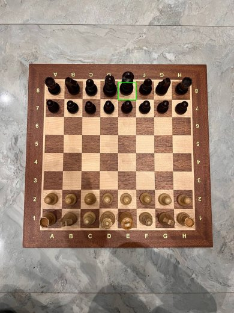
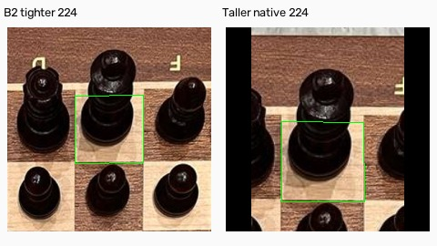
white_near_camera, historical angle 60°, image_up_fallback. Training only; no model prediction.
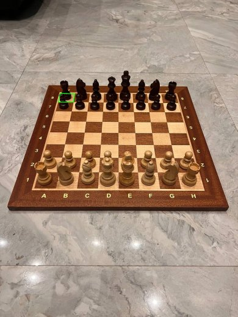
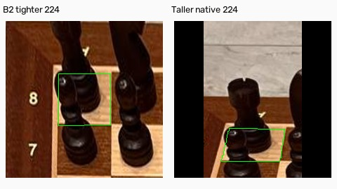
white_near_camera, historical angle 60°, image_up_fallback. Training only; no model prediction.
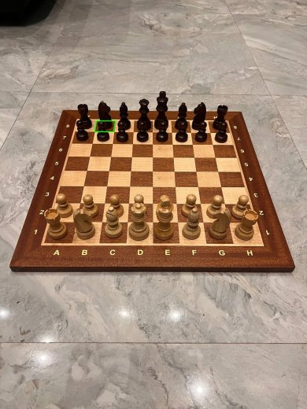
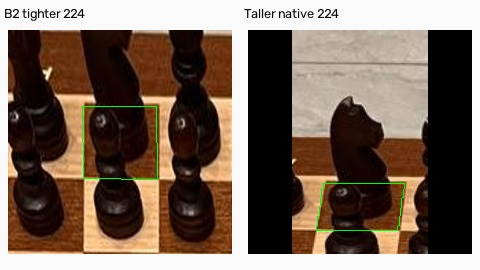
white_near_camera, historical angle 60°, image_up_fallback. Training only; no model prediction.
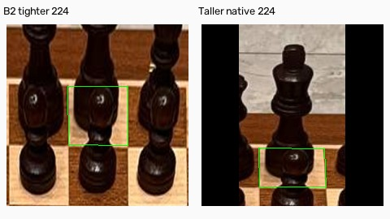
white_near_camera, historical angle 60°, image_up_fallback. Training only; no model prediction.
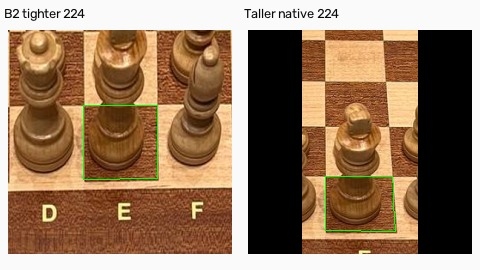
white_left, historical angle 75°, assumed_pinhole_normal. Training only; no model prediction.
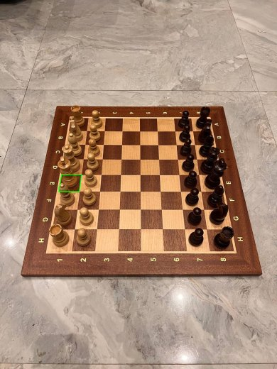
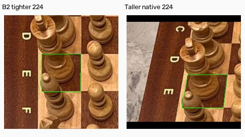
white_right, historical angle 75°, assumed_pinhole_normal. Training only; no model prediction.
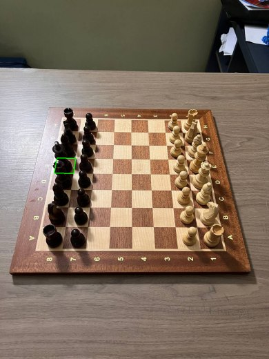
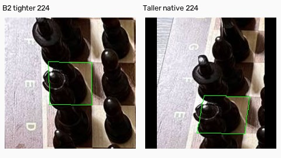
black_near_camera, historical angle 60°, assumed_pinhole_normal. Training only; no model prediction.
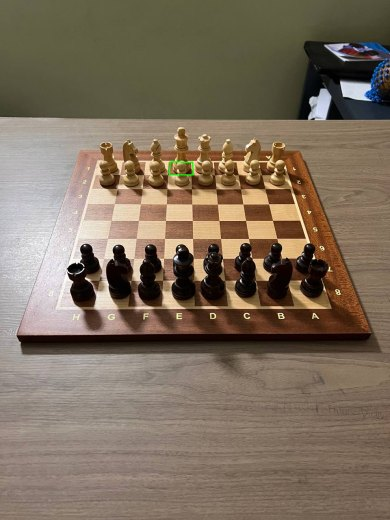
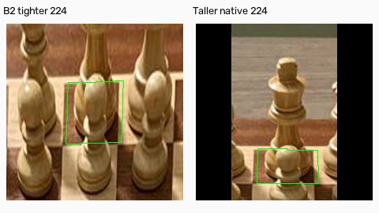
black_near_camera, historical angle 60°, assumed_pinhole_normal. Training only; no model prediction.
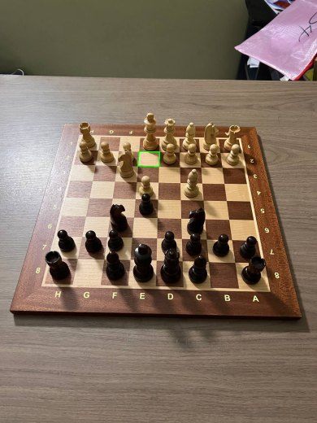
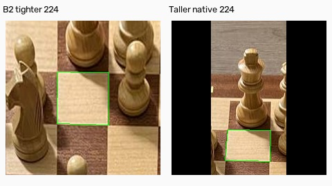